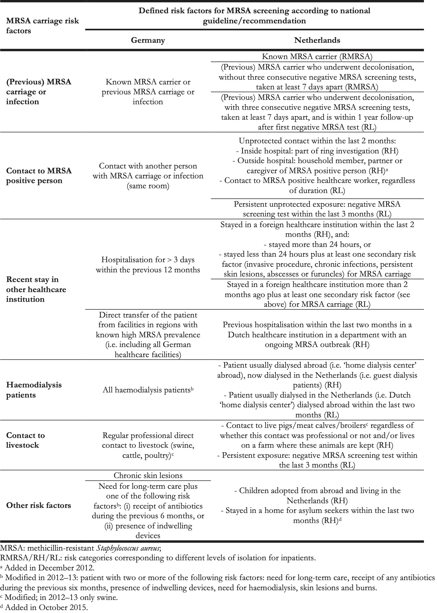
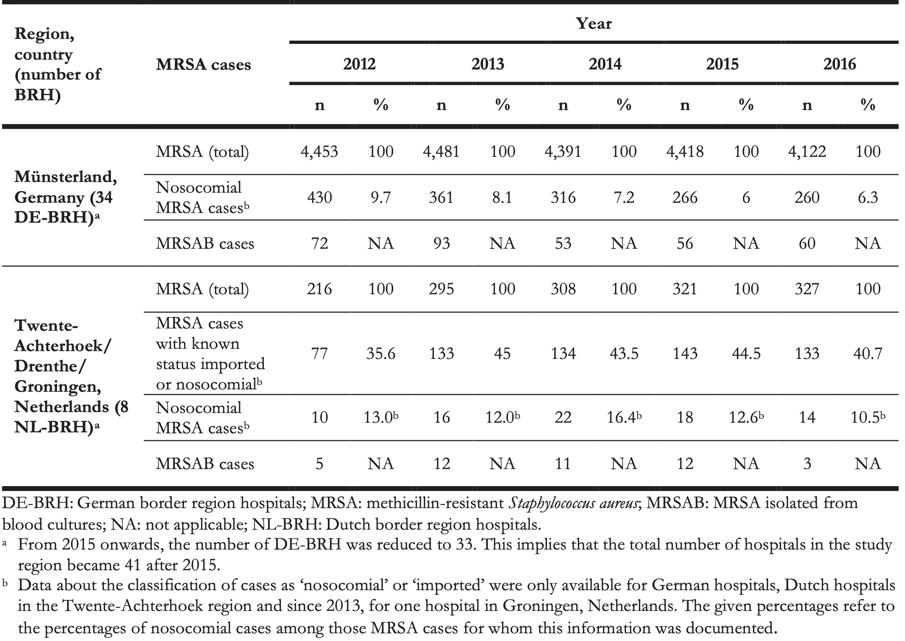
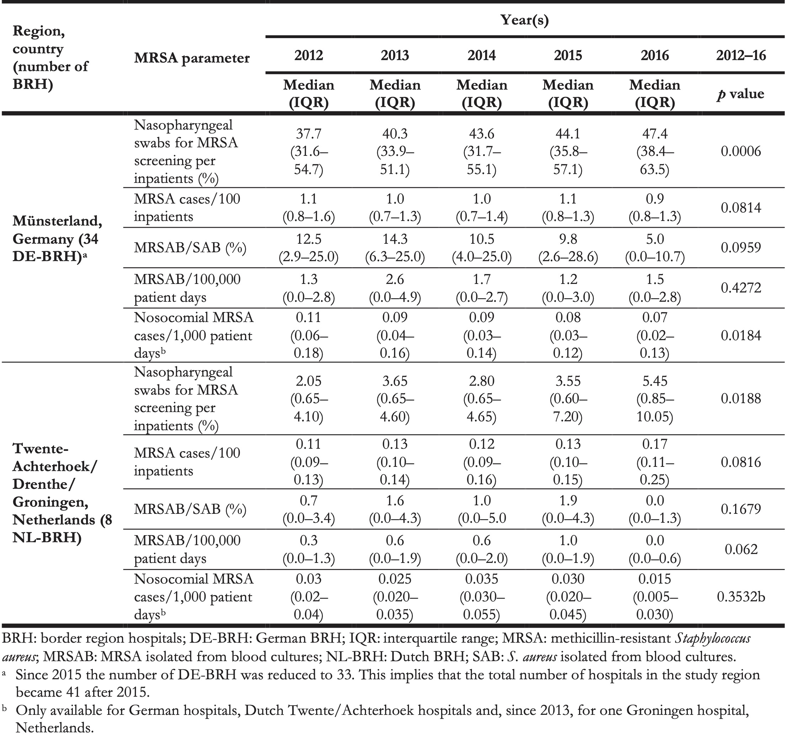
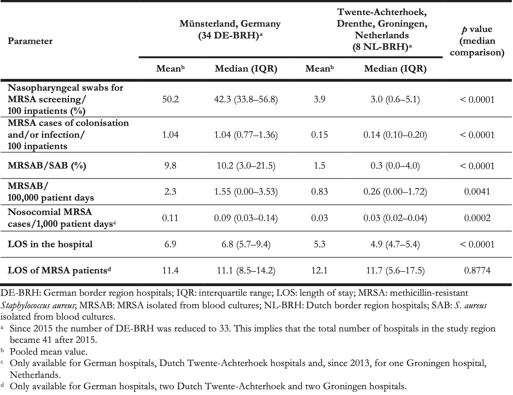
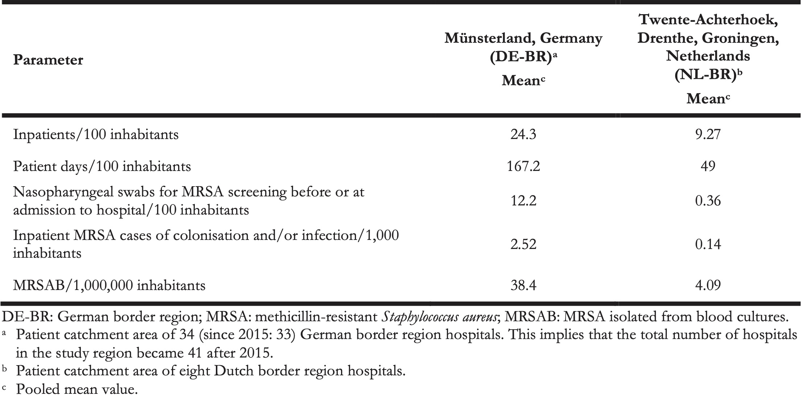

9 Changing Epidemiology of Methicillin-Resistant Staphylococcus aureus in 42 Hospitals in the Dutch-German Border Region, 2012 to 2016: Results of the Search-and-Follow Policy
Published in Eurosurveillance. 2019 Apr 11; 24(15): 180024
Jurke A 1, Daniels-Haardt I 2, Silvis W 3, Berends MS 4,5, Glasner C 5, Becker K 6, Köck R 6,7,8, Friedrich AW 5
- North Rhine-Westphalian Centre for Health, Section Infectious Disease Epidemiology, Bochum, Germany
- North Rhine-Westphalian Centre for Health, Department Health Promotion, Health Protection, Bochum, Germany
- Laboratory for Medical Microbiology and Public Health (LabMicTA), Hengelo, Netherlands
- Certe Medical Diagnostics and Advice Foundation, Groningen, Netherlands
- University of Groningen, University Medical Center Groningen, Department of Medical Microbiology and Infection Prevention, Groningen, Netherlands
- University Hospital Münster, University of Münster, Institute of Medical Microbiology, Münster, Germany
- University Hospital Münster, University of Münster, Institute for Hygiene, Münster, Germany
- Institute of Hygiene, DRK Kliniken Berlin, Berlin, Germany
Abstract
Methicillin-resistant Staphylococcus aureus (MRSA) is a major cause of healthcare-associated infections. We describe MRSA colonisation/infection and bacteraemia rate trends in Dutch–German border region hospitals (NL–DE-BRH) in 2012–16. All 42 NL–DE BRH (8 NL-BRH, 34 DE-BRH) within the cross-border network EurSafety Health-net provided surveillance data (on average ca 620,000 annual hospital admissions, of these 68.0% in Germany). Guidelines defining risk for MRSA colonisation/infection were reviewed. MRSA-related parameters and healthcare utilisation indicators were derived. Medians over the study period were compared between NL- and DE-BRH. Measures for MRSA cases were similar in both countries, however defining patients at risk for MRSA differed. The rate of nasopharyngeal MRSA screening swabs was 14 times higher in DE-BRH than in NL-BRH (42.3 vs 3.0/100 inpatients; p < 0.0001). The MRSA incidence was over seven times higher in DE-BRH than in NL-BRH (1.04 vs 0.14/100 inpatients; p < 0.0001). The nosocomial MRSA incidence-density was higher in DE-BRH than in NL-BRH (0.09 vs 0.03/1,000 patient days; p = 0.0002) and decreased significantly in DE-BRH (p = 0.0184) during the study. The rate of MRSA isolates from blood per 100,000 patient days was almost six times higher in DE-BRH than in NL-BRH (1.55 vs 0.26; p = 0.0041). The patients had longer hospital stays in DE-BRH than in NL-BRH (6.8 vs 4.9; p < 0.0001). DE-BRH catchment area inhabitants appeared to be more frequently hospitalised than their Dutch counterparts. Ongoing IPC efforts allowed MRSA reduction in DE-BRH. Besides IPC, other local factors, including healthcare systems, could influence MRSA epidemiology.
9.1 Introduction
Cross-border patient mobility is a priority in the European Union (EU), because the most accessible or appropriate care for citizens living in border regions may be available abroad. When, in 2013, the directive 2011/24/EU came into force, patients’ right to access healthcare in other Member States including reimbursement and medical follow-up in their respective home countries was entitled in an EU law for the first time. With this, cross-border cooperation in infection prevention and control (IPC) using comprehensive strategies is important [1].
Antimicrobial resistant (AMR) pathogens are a serious threat to public health in Europe, leading to increased healthcare costs, treatment failure and deaths. For invasive bacterial infections, prompt treatment with effective antimicrobial agents is essential and is one of the most effective interventions to reduce the risk of fatal outcomes [2]. Currently, the epidemiological situation is cause for concern especially with regard to AMR Gram-negative pathogens, e.g., characterised by carbapenem resistance (CR) [3]. However, the Gram-positive methicillin-resistant Staphylococcus aureus (MRSA) is still one of the most important causes of healthcare-associated infections due to AMR pathogens [3].
In 2017 in a consensus report of the European Centre for Disease Prevention and Control (ECDC), the European Food Safety Authority (EFSA) and the European Medicines Agency (EMA), the proportion of MRSA in invasive S. aureus infections was proposed as an indicator for surveillance of AMR pathogens in humans [4]. Although in 2016 the proportion of MRSA in invasive S. aureus infections in Europe reached its lowest level (13.7%) since the ECDC first presented population-weighted data for the EU in 2009, large inter-country variations (1.2 to 50.5%) remain in Europe [3]. For example, in the most populated German federal state, North Rhine-Westphalia (NRW), the incidence of MRSA bacteraemia per inhabitants was 32-fold higher compared with the Dutch neighbouring region with similar population size in 2009–10 [5].
The occurrence of MRSA still necessitates continuous surveillance and preparedness to optimise IPC to further decrease MRSA rates [6-9]. Since 1999, MRSA screening of various sites including at least nares, pharynx and wounds (if present) and additionally perineum or groin (in case of known previous carriage) before or at admission to hospitals is recommended in Germany, if patients have defined risk factors [10]. For MRSA carriers IPC measures including isolation in single rooms, barrier precautions and decolonisation therapies are also recommended [10,11]. Within the EU-funded community initiative INTERREG IIIA in 2006, all hospitals in the German Münsterland region, located directly at the Dutch–German border, started to establish a network to control MRSA – the EUREGIO MRSA net. They agreed to monitor the implementation of the IPC measures, harmonise local standards, exchange hospital utilisation data and MRSA data, perform molecular typing of MRSA isolates and establish regional benchmarks [12]. This ‘search-and-follow’ strategy was inspired from the ‘search-and-destroy’ policy implemented in Dutch hospitals since the 1980s. It aimed to improve application of the German national MRSA recommendations, the regional cooperation between hospitals, other healthcare facilities and public health authorities, as well as to create a more robust MRSA surveillance system [9,12-14]. Further to this strategy, screening for MRSA carriage among risk patients at hospital admission increased between 2009 and 2011 in these regional German hospitals and the nosocomial MRSA incidence density significantly decreased [15].
The cross-border IPC network cooperation, i.e. the Dutch−German web-based communication portal for handling MRSA problems for healthcare workers, patients and the public was continued from 2009 to 2015 within the INTERREG IVA funded project EurSafety Health-net. This enabled hospitals and nursing homes to acquire Euregional Quality and Transparency certificates. Moreover, since 2016, the collaboration was further prolonged within the INTERREG VA funded project EurHealth-1Health inter alia. Within this, the Dutch signaling meeting of the Hospital-acquired Infection and Antimicrobial Resistance Monitoring Group (SO-ZI/AMR) occurs in the German study region.
Here, we analysed 2012 to 2016 MRSA surveillance data from Dutch and German border region hospitals (NL-BRH and DE-BRH) in the network in order to describe temporal and spatial trends of MRSA rates and find differences between these groups of hospitals. We also used the data to calculate the MRSA rates per inpatient and per patient days in both groups of hospitals and the MRSA rates per inhabitants in the patient catchment areas of NL-BRH and DE-BRH respectively in order to compare the two groups in relation to these parameters.
9.2 Methods
9.2.1 Setting
Within the EurSafety Health-net project (http://www.eursafety.eu/) the German part of the project region geographically comprised six districts in the Münsterland region (codes DEA33–35, DEA37, DEA38 and DE94B, level 3, according to the Nomenclature of Territorial Units for Statistics, NUTS [16]) and was inhabited by ca 1.73 million people [17]. The Dutch part comprised eight districts in the provinces of Groningen, Drenthe and in the region Twente-Achterhoek (codes NL111–113, NL131–133, NL213 and NL225) inhabited by ca 2.10 million people (Figure 1) [17]. Initially, there were 42 hospitals located in the Dutch–German region (reduced in 2015 to 41 due to a structural merging of two DE-BRH) treating ca 620,000 admitted patients (68.0% in the German part of the study region) with ca 3,900,000 patient days per year. All 34 (since 2015, 33) regional DE-BRH (9.5% of hospitals in NRW in 2016) and all eight regional NL-BRH (8.8% of hospitals in the Netherlands in 2016) took part in the project. Among the DE-BRH, 29 were acute care hospitals, one was a university hospital, one was a rehabilitation clinic and three hospitals were specialised in psychiatry, while the NL-BRH comprised one university- and seven acute care hospitals.
![Location of the study region in the Netherlands and Germany, 2012-2016. The dark grey area represents the study region, including the Dutch regions East Groningen (NL111), Delfzijl and surroundings (NL112), rest of Groningen (NL113), North Drenthe (NL 131), South East Drenthe (NL132), South West Drenthe (NL133), Twente (NL213), Achterhoek (NL225), and the German regions Grafschaft Bentheim region (DE94B) and the Münsterland-region with the urban district Münster (DEA33) and the rural districts Borken (DEA34), Coesfeld (DEA35), Steinfurt (DEA37) and Warendorf (DEA38).](images/09-01.jpg)
Figure 9.1: Location of the study region in the Netherlands and Germany, 2012-2016. The dark grey area represents the study region, including the Dutch regions East Groningen (NL111), Delfzijl and surroundings (NL112), rest of Groningen (NL113), North Drenthe (NL 131), South East Drenthe (NL132), South West Drenthe (NL133), Twente (NL213), Achterhoek (NL225), and the German regions Grafschaft Bentheim region (DE94B) and the Münsterland-region with the urban district Münster (DEA33) and the rural districts Borken (DEA34), Coesfeld (DEA35), Steinfurt (DEA37) and Warendorf (DEA38).
9.2.2 Guidelines for patients at risk for MRSA and infection prevention and control measures
Both NL-BRH and DE-BRH implemented MRSA-related IPC measures according to their national guidelines and recommendations, issued by the Dutch Working Group on Infection Prevention (WIP) and the German Commission for Hospital Hygiene and Infection Prevention (KRINKO) at the Robert Koch-Institute, respectively [10,18]. Of note, the definitions of whom to screen at admission differed for NL-BRH and DE-BRH based on the national guidelines and recommendations (Table 1), as well as screening sites (DE-BRH: at least nose, pharynx, throat and wounds, if present, additionally perineum and groin swab, when indicated; NL-BRH: nasal-, throat- and perineum or rectum swab plus additional cultures depending on clinical signs) [10,19]. In all hospitals, positive screenings or any other detection of MRSA was followed by single room isolation, contact precautions and decolonisation, if applicable. Pre-emptive isolation of patients with MRSA risk factors was performed according to local guidelines (in DE-BRH only for patients with previous MRSA carriage, for NL-BRH see Table 1.
The levels of isolation for inpatients with risk categories were the following:
- RMRSA: MRSA positive- or (RH) high-risk category patients in high-risk departments of the hospital (e.g., intensive care unit, haematology): single room isolation with contact- and airborne precautions.
- RH: High-risk category patients who are not in high-risk departments and who have an MRSA screening result available within 24 hours of admission: single room with contact precautions.
- RL: Low-risk category: no isolation, awaiting new MRSA screening test results.
In both countries adherence to the MRSA-IPC guidelines- and recommendations was periodically checked by the responsible local public health authorities (Germany) and national health inspectorate (Netherlands). The implementation of other IPC measures in the participating hospitals, such as standards for the prevention of catheter-related bloodstream infections, was not planned or assessed within the project.
Table 1. Risk factors for MRSA carriage at admission according to Dutch and German MRSA guidelines, 2012–2016.

9.2.3 Data collection
An MRSA case was defined as an inpatient who was colonised or infected with MRSA at admission or for nosocomial MRSA cases, after admission. A blood culture positive for MRSA, from a single inpatient and from a single hospital stay was qualified as MRSAB case. If an MRSA case, or MRSAB case, had several stays in a year, each hospital stay was counted as an MRSA case, or MRSAB case, in the surveillance.
On both sides of the border, the collected surveillance data of inpatients (i.e. excluding outpatients) included the number of nasopharyngeal swabs performed for MRSA screening before or at admission, the numbers of MRSA cases (one isolate per patient per hospital stay) − in DE-BRH and in several NL-BRH MRSA cases were additionally classified as imported or nosocomial (i.e. nosocomial, if the case was detected ≥ 3 days after hospital admission unless the patient was a known MRSA carrier), the number of cases and the number of patient days. Additionally, in DE-BRH and in several NL-BRH the patient days of MRSA cases (i.e. the number of days, which an MRSA-positive patient spent in hospital) were also recorded. Moreover, the number of inpatients with a blood culture positive for MRSA (MRSAB, one isolate per patient case) and the number of S. aureus in blood cultures (one isolate per patient case) were assessed. The MRSA-surveillance data as described above were collected in all DE-BRH using a protocol adapted from the national German Nosocomial Infections Surveillance System (MRSA-KISS [20]); see Supplement Table S1). For cross-border analysis, the laboratories serving for all NL-BRH provided retrospectively collected data for the period 2012 to 2016, according to the same protocol.
9.2.4 Ethical statement
Ethical approval was asked from ethical committee at the University Medical Center Groningen (UMCG), and approval was not necessary for this study.
9.2.5 Data analysis
We analysed the surveillance data of five years (2012–16) and calculated the following parameters: (i) screening rate (nasopharyngeal swabs for MRSA/100 inpatients), (ii) MRSA incidence (MRSA cases/100 inpatients), (iii) percentage of MRSA isolates per all S. aureus isolates detected in blood cultures, (iv) incidence density of MRSA isolates detected from blood cultures (MRSAB cases/100,000 patient days), (v) nosocomial MRSA incidence density (nosocomial MRSA-cases/1,000 patient days), (vi) length of stay in hospital (number of patient days/inpatients, (vii) length of stay in the hospital of MRSA cases (number of patient days of MRSA cases/MRSA cases). We calculated the mean annual numbers of inpatients per 100 inhabitants and of patient days per 100 inhabitants of the patient catchment area of NL-BRH and DE-BRH. Furthermore, we calculated the mean annual number of nasopharyngeal swabs performed for MRSA screening before or at admission to hospital per 100 inhabitants in the patient catchment area of the regional hospitals (DE-BR and NL-BR) as well as of inpatient MRSA cases per 1,000 inhabitants and the MRSAB/1,000,000 inhabitants using our surveillance data of inpatients (i.e., excluding outpatients). The number of inhabitants were assessed from the official statistical database [17].
Time trends of MRSA parameters were analysed by Friedman tests. The percentage of nosocomial MRSA cases on all MRSA cases was assessed by Cochran–Armitage test of linear trend. The cross-border regional comparisons were analysed using Wilcoxon rank sum test. All statistical analyses were done using SAS 9.4 software (SAS Institute Inc., Cary, United States); p < 0.05 was considered significant. Results of significance tests were discarded if the software displayed an alert due to more than 10% of missing values in the respective dataset. The map was made using RegioGraph10 (GFK Geomarketing GmbH, Bruchsal, Germany).
9.3 Results
9.3.1 Trend and cross-border comparison of MRSA rates
The total numbers of MRSA cases (detected in DE-BRH and NL-BRH are shown in Table 2. In both DE-BRH and NL-BRH the median nasopharyngeal MRSA screening rate increased significantly between 2012 and 2016 (Table 3). Overall, the median screening rate was 14 times higher in DE-BRH than in NL-BRH (p < 0.0001, Table 4).
Table 2. Numbers of methicillin-resistant Staphylococcus aureus cases documented in all study hospitals in the German region of Münsterland and the Dutch regions of Twente-Achterhoek, Drenthe and Groningen, 2012–2016 (n = 42 hospitals) a.

Table 3. Annual medians of methicillin-resistant Staphylococcus aureus parameters in all study hospitals in the German region Münsterland and the Dutch regions of Twente-Achterhoek, Drenthe and Groningen, 2012–2016 (n = 42 hospitals) a.

Table 4. Methicillin-resistant Staphylococcus aureus parameters in all study hospitals in the German region of Münsterland and the Dutch regions of Twente-Achterhoek, Drenthe and Groningen, 2012–2016 (n = 42 hospitals) a.

The median MRSA incidence remained stable over time at both sides of the border (Table 3), but was more than seven times higher in DE-BRH than in NL-BRH (p < 0.0001) (Table 4). The median percentage of MRSA in S. aureus blood culture isolates decreased from 12.5% in 2012 to 5.0% in 2016 in DE-BRH (p = 0.0959), while it remained stable in NL-BRH (p = 0.1679) (Table 3), but was more than 34 times higher in DE-BRH (p = 0.0001) (Table 4). The median of MRSAB per 100,000 patient days remained stable over time in DE-BRH (p = 0.4272) and NL-BRH (p = 0.0620) (Table 3) and was six-fold greater in DE-BRH than in NL BRH (p = 0.0041) (Table 4). The percentages of nosocomial cases on all MRSA cases (Table 2) decreased significantly in DE-BRH (p < 0.0001), but did not change in NL-BRH (p < 0.6474). Over the study period the median nosocomial MRSA incidence-density decreased significantly in DE-BRH (p = 0.0184) (Table 3), but did not change in NL-BRH (p = 0.3532) and was approximately three times higher in DE-BRH than in NL-BRH (p = 0.0002) (Table 4).
9.3.2 Cross-border comparison of healthcare utilisation
We compared the available data on healthcare utilisation in DE-BRH and NL-BRH. The median length of stay (LOS) in the hospital was 6.8 days in DE-BRH compared with 4.9 days in NL-BRH (p < 0.0001) (Table 4); LOS of MRSA patients was similar in DE-BRH vs NL-BRH (11.1 days vs 11.7 days; p = 0.8774) (Table 4). The hospitalisation rate was 24.3 inpatients/100 inhabitants annually in the patient catchment area of DE-BRH, almost thrice the rate in the NL-BRH’s catchment area (9.27/100). To put this difference in healthcare utilisation into context, we calculated the mean annual number of nasopharyngeal MRSA screening swabs before or at admission to hospital per 100 inhabitants in the German border region (DE-BR) vs the Dutch border region (NL-BR) (12.2 vs 0.36). Additionally, we compared the MRSA surveillance data of inpatients (i.e., excluding outpatients) in the patient catchment area of DE-BRH and NL-BRH. The calculated numbers of inpatient MRSA cases per 1,000 inhabitants in DE-BR and NL-BR were 2.52 vs. 0.14. Furthermore, the calculated MRSAB/1,000,000 inhabitants in DE-BR and NL-BR was 38.4 vs 4.09 (Table 5).
Table 5. Calculated parameters in the patient catchment area of all study hospitals in the German region of Münsterland and Dutch regions of Twente-Achterhoek, Drenthe and Groningen, 2012–2016 (n = 42 hospitals) a.

9.4 Discussion
As patients in the EU have the right to healthcare across the borders of Member States (EU directive 2011/24/EU), it is of interest to compare the quality of care, safety standards and risks of nosocomial infection by AMR pathogens between EU countries. In this respect, the cross-border systematic and continuous MRSA surveillance is one of the cornerstones to ensure equal quality of healthcare [21].
Our study revealed significant differences between Dutch and German hospitals (Table 4). The median MRSA-incidence in DE-BRH was more than seven times higher compared with NL-BRH. We also found that the median MRSA percentage of S. aureus detected in blood cultures was more than 34 times higher in DE-BRH than in NL-BRH (Table 4). The incidence density of MRSAB was six times higher in DE-BRH (Table 4) and there were nine times more MRSAB per 1,000,000 inhabitants for the patient catchment area of DE-BRH compared with NL-BRH (Table 5).
According to the ECDC, differences in the occurrence of AMR pathogens between European countries are most likely caused by differences in healthcare utilisation, antimicrobial use and IPC practices [3].
Concerning healthcare utilisation in our context, we found that inhabitants in the German part of the study region were almost three times as often hospitalised (Table 5) and had a significantly longer LOS than patients on the Dutch part (Table 4). This may be due to socioeconomic factors or a different organisation of ambulatory healthcare.
While antimicrobial consumption was not the focus of the current study, NRW has been reported as the region in Germany with the highest antimicrobial consumption in outpatients (19.2 daily defined doses (DDD/1,000 inhabitants) [22]. In this respect, the MRSA incidence in DE-BRH was slightly above the incidences in German hospitals participating in the nationwide surveillance system MRSA-KISS [20]. The antimicrobial consumption level in NRW seems to be also considerably higher than in the Netherlands (10.39 DDD/1,000 inhabitants) [23], not only in terms of total antibiotics consumed, but also for the oral use of second-generation cephalosporins. Promoting rational regional antibiotic use is therefore one of the major goals in the INTERREG VA project EurHealth-1Health (http://www.eurhealth-1health.eu/).
For MRSA IPC, the recommendations in Germany and the corresponding guidelines in the Netherlands were comparable regarding the measures performed for MRSA carriers [10,18]. However, there were differences between the two countries in identifying people at risk of MRSA infection/colonisation [10,18]. In this study, we found that the DE-BRH performed 14 times more nasopharyngeal screening swabs for MRSA than their Dutch counterparts.
The higher screening rates on the German side of the border may be ascribed to the fact that in German IPC recommendations, previous hospitalisation in Germany is a risk factor for MRSA carriage. This constitutes a main difference in defined risk factors between Dutch- and German MRSA IPC guidelines, whereby Dutch guidelines mostly consider screening for patients previously hospitalised outside the Netherlands (Tables 1 and and3)3) [14,24]. In this respect, we observed that although the densities of nosocomial MRSA cases were lower in NL-BRH than in DE-BRH (Table 3), the proportion of nosocomial MRSA cases among all MRSA detected was slightly higher in the Dutch hospitals (Table 2). The reason for this remains unclear, but it might be speculated that a larger proportion of MRSA carriers in the Netherlands had no risk factors for MRSA and were hence not screened at admission.
Another explanation for screening rate differences between the two countries may be distinct underlying epidemiological situations regarding MRSA. For example, the MRSA prevalence is higher in the population in Germany than that in patients at hospital admission in the Netherlands (0.7% vs. 0.13%) [25,26]. Moreover, in the German part of the study region, a possible additional MRSA burden due to the exceptionally frequent occurrence of livestock-associated MRSA might have an effect [27,28].
The screening and IPC measures in the DE-BRH appeared to be nevertheless appropriate. In 2006, in the project region excluding Groningen and Drenthe (Figure), investigations evaluating the numbers of patients with MRSA risk factors at admission to German hospitals demonstrated that ca 35.6% of patients had a risk factor requiring screening [29]. A corresponding level of screening was implemented by DE-BRH during the study period 2009–11 [15]. This level remained high in the 2012–16 period (Table 3), indicating a very good implementation of the screening standards.
About 1% of all patients admitted in DE-BRH carried MRSA, which corresponds well to results of investigations evaluating the prevalence of MRSA carriage in the regional general, non-hospitalised population in 2012 [25]. In terms of difference with the Netherlands, this has for consequence that it is more expensive to provide isolation capacities for ca 1.0% of inpatients with MRSA in DE-BRH vs 0.15% in NL-BRH. Moreover, the higher MRSA incidence in DE-BRH could lead to a higher probability for nosocomial MRSA cases as they are not completely avoidable [30-32].
From 2012 to 2016 however, the nosocomial MRSA incidence density in DE-BRH decreased significantly, a trend already observed from 2009 to 2011 [15]. Moreover, the nosocomial MRSA incidence density (Table 3) appeared to be below the densities reported for hospitals participating in the nationwide surveillance system MRSA-KISS (median nosocomial MRSA cases per 1,000 patient days in DE-BRH/MRSA KISS, 2012–16: 0.11/0.14, 0.09/0.12, 0.09/0.10, 0.08/0.09, 0.07/0.08) [15,20]. This may indicate the successful implementation of concerted IPC standards in DE-BRH in the EurSafety Health-net network [15].
We also observed for that the difference of the incidence of MRSA bacteraemia per inhabitants between the German and Dutch border region (38.4 vs 4.09 per 1,000,000) was apparently smaller than calculated in a previous study, which used 2009 Dutch and 2010 German data respectively to derive the difference between NRW and the Netherlands (57.6 vs 1.8 per 1,000,000) [5]. In addition, according to the population-based German mandatory notification system for invasive MRSA infections (SurvStat) from 2012 to 2016, 40.7 MRSA isolates were detected in blood or cerebrospinal fluid per 1,000,000 inhabitants in the German project region [33], which is lower compared with data from the federal state of NRW (70.3 per 1,000,000 inhabitants) as well as from Germany (47.9 per 1,000,000 inhabitants) [34].
Comparing our results with those of other German laboratories participating in a voluntary, national surveillance system (ARS) [35], revealed that, for each year of the period 2012–16 the median percentage of MRSA in S. aureus from blood cultures was lower in DE-BRH than in other laboratories in western Germany (DE-BRH/ARS-region west (NRW), 2012–16: 12.5%/19.0%, 14.3%/15.0%, 10.5%/13.5%, 9.8%/13.3%, 5.0%/12.0%) (Table 3), as well as below the middle lower range of the EU/European Economic Association (EEA) population-weighted mean between 18.8% in 2012 and 13.7% in 2016 [3,34,36].
In contrast, the mean MRSA percentage of S. aureus detected in blood culture during 2012–16 was higher (1.5% vs 1.3%) in NL-BRH compared with Dutch national data of Infectious Disease Surveillance Information System for Antibiotic Resistance, (ISIS-AR) covering data of 52% of diagnostic laboratories [37].
As typical for all passive surveillance systems, bias due to differences in reporting behaviour cannot be excluded and is a limitation of this study. However, as MRSA surveillance in DE-BRH started in 2007, a stabilised compliance in reporting can be assumed for the period from 2012–16. The higher number of MRSA cases per inhabitants on the German side compared with the Netherlands is biased if there is more than one episode of MRSA detection per year for one individual patient among the number of cases. Also, the inclusion of three psychiatric hospitals and one rehabilitation clinic, which have usually longer average lengths of stay, may have prolonged hospital stay in the DE-BRH. However, the data are in accordance with German-wide assessment systems. The clinical relevance of MRSA isolates detected in blood cultures is undisputable, but variations in blood culture diagnostics (e.g., frequency, performance) may result in bias when comparing MRSA percentages of S. aureus blood culture isolates between different countries [38]. A limitation of the study design is that the implementation of IPC standards, which are not directly targeted to control MRSA, such as bundles to prevent central-line-associated bloodstream infections (CLABSI), was not assessed and compared in the participating hospitals. Hence, changes of the incidence of MRSA bacteraemia could also be attributable to improvements in CLABSI prevention or other IPC standards.
This study on MRSA covering all hospitals across part of a European border as well as hospitals of all three care-categories demonstrated that routine MRSA surveillance may be helpful to monitor trends of MRSA parameters, to compare the MRSA rates and to indicate needs for further improvement to reach low MRSA rates EU-wide. Our results supplement the European and national surveillance systems. Ongoing efforts in MRSA prevention are recommended, including all healthcare sectors, especially with focus on One Health [39-42]. Moreover, cross-border surveillance should be extended to other multidrug-resistant organisms, such as CR Enterobacteriaceae in the future.
Acknowledgements
We acknowledge all the active participants of the EurSafety Health-net and EurHealth-1Health projects: The infection control nurses and the physicians responsible for infection control of the 42 participating hospitals, as well as the staff of the regional laboratories participating in the project. We thank the project representatives appointed by the public health offices in the EUREGIO, especially Ms. Scherwinski and Ms. Winkler (both Borken), Dr. Toepper (Coesfeld), Dr. Bierbaum and Dr. Lürwer (both Münster), Dr. Schmeer and Ms. Suhr (both Steinfurt), Dr. König and Ms. Clemens (Warendorf). Furthermore, we thank Ms. Schmidt, Ms. Lunemann, Ms. Jessen and Ms. Ganser (NRW Centre for Health) and Dr. Gunnar Andriesse from Certe in Groningen for their support.
Funding
The EurSafety Health-Net project was financially supported by external funding within the INTERREG IVA program ‘Germany-Netherlands’ of the EU (EurSafety Health-net: INTERREG IVA III-1-01=073), by the German states of NRW and Lower Saxony and by the Dutch provinces Overijssel, Gelderland and Limburg. The EurHealth-1Health project is implemented within the framework of the INTERREG VA ‘Germany-Netherlands’ program (grant number EU/INTERREG VA-202085) and is co-financed by the European Union, the Dutch Ministry of Health, Welfare and Sport (VWS), the Ministry of Economy, Innovation, Digitalisation and Energy of the German Federal State North Rhine-Westphalia and by the German Federal State Lower Saxony.
References
- Poljak M, Akova M, Friedrich AW, Rodríguez-Baño J, Sanguinetti M, Tacconelli E, et al. ESCMID-an international Europe-based society committed to fostering cross-border collaboration and education to improve patient care. Clin Microbiol Infect. 2018;24(1):1-2. 10.1016/j.cmi.2017.05.024
- Cassini A, Högberg LD, Plachouras D, Quattrocchi A, Hoxha A, Simonsen GS, et al. Attributable deaths and disability-adjusted life-years caused by infections with antibiotic-resistant bacteria in the EU and the European Economic Area in 2015: a population-level modelling analysis. Lancet Infect Dis. 2019;19(1):56-66. 10.1016/S1473-3099(18)30605-4
- European Centre for Disease Prevention and Control (ECDC). Antimicrobial resistance surveillance in Europe 2016. Annual Report of the European Antimicrobial Resistance Surveillance Network (EARS-Net). Stockholm: ECDC; 2017. Available from: https://ecdc.europa.eu/sites/portal/files/documents/AMR-surveillance-Europe-2016.pdf
- European Centre for Disease Prevention and Control (ECDC) ECDC, EFSA and EMA Joint Scientific Opinion on a list of outcome indicators as regards surveillance of antimicrobial resistance and antimicrobial consumption in humans and food-producing animals. EFSA J. 2017;15(10):5017.
- van Cleef BAGL, Kluytmans JAJW, van Benthem BHB, Haenen A, Monen J, Daniels-Haardt I, et al. Cross border comparison of MRSA bacteraemia between The Netherlands and North Rhine-Westphalia (Germany): a cross-sectional study. PLoS One. 2012;7(8):e42787. 10.1371/journal.pone.0042787
- Köck R, Becker K, Cookson B, van Gemert-Pijnen JE, Harbarth S, Kluytmans J, et al. Systematic literature analysis and review of targeted preventive measures to limit healthcare-associated infections by meticillin-resistant Staphylococcus aureus. Euro Surveill. 2014;19(29):23-49. 10.2807/1560-7917.ES2014.19.29.20860
- Sai N, Laurent C, Strale H, Denis O, Byl B. Efficacy of the decolonization of methicillin-resistant Staphylococcus aureus carriers in clinical practice. Antimicrob Resist Infect Control. 2015;4(56):56. 10.1186/s13756-015-0096-x
- Sassmannshausen R, Deurenberg RH, Köck R, Hendrix R, Jurke A, Rossen JWA, et al. MRSA Prevalence and Associated Risk Factors among Health-Care Workers in Non-outbreak Situations in the Dutch-German EUREGIO. Front Microbiol. 2016;7(1273):1273. 10.3389/fmicb.2016.01273
- Dik JW, Sinha B, Friedrich AW, Lo-Ten-Foe JR, Hendrix R, Köck R, et al. Cross-border comparison of antibiotic prescriptions among children and adolescents between the North of the Netherlands and the North-West of Germany. Antimicrob Resist Infect Control. 2016;5(1):14. 10.1186/s13756-016-0113-8
- Commission for Hospital Hygiene and Infection Prevention at Robert Koch-Institute Empfehlungen zur Prävention und Kontrolle von Methicillin-resistenten Staphylococcus aureus-Stämmen (MRSA) in medizinischen und pflegerischen Einrichtungen. [Recommendations for prevention and control of methicillin-resistant Staphylococcus aureus (MRSA) in medical and nursing facilities]. Bundesgesundheitsblatt Gesundheitsforschung Gesundheitsschutz. 2014;57(6):695-732. German. 10.1007/s00103-014-1980-x
- Commission for Hospital Hygiene and Infection Prevention at Robert Koch-Institute Empfehlungen zur Prävention und Kontrolle von Methicillinresistenten Staphylococcus aureus-Stämmen (MRSA) in medizinischen und pflegerischen Einrichtungen. [Recommendations for the prevention and control of methicillin-resistant Staphylococcus aureus isolates (MRSA) in hospitals and other healthcare facilities]. GMS Krankenhhyg Interdiszip. 2009;4(1):Doc01.
- Friedrich AW, Daniels-Haardt I, Köck R, Verhoeven F, Mellmann A, Harmsen D, et al. EUREGIO MRSA-net Twente/Münsterland–a Dutch-German cross-border network for the prevention and control of infections caused by methicillin-resistant Staphylococcus aureus. Euro Surveill. 2008;13(35):18965. 10.2807/ese.13.35.18965-en
- Ciccolini M, Donker T, Köck R, Mielke M, Hendrix R, Jurke A, et al. Infection prevention in a connected world: the case for a regional approach. Int J Med Microbiol. 2013;303(6-7):380-7. 10.1016/j.ijmm.2013.02.003
- Souverein D, Houtman P, Euser SM, Herpers BL, Kluytmans J, Den Boer JW. Costs and Benefits Associated with the MRSA Search and Destroy Policy in a Hospital in the Region Kennemerland, The Netherlands. PLoS One. 2016;11(2):e0148175. 10.1371/journal.pone.0148175
- Jurke A, Köck R, Becker K, Thole S, Hendrix R, Rossen J, et al. Reduction of the nosocomial meticillin-resistant Staphylococcus aureus incidence density by a region-wide search and follow-strategy in forty German hospitals of the EUREGIO, 2009 to 2011. Euro Surveill. 2013;18(36):20579. 10.2807/1560-7917.ES2013.18.36.20579
- Eurostat. Nomenclature of territorial units for statistics (NUTS); National structures (EU). Eurostat; 2018. Available from: https://ec.europa.eu/eurostat/web/nuts/national-structures-eu
- Eurostat. Population density by NUTS 3 region. Eurostat: 2018. Available from: https://ec.europa.eu/eurostat/web/products-datasets/product?code=demo_r_d3dens
- Werkgroep Infectiepreventie (WIP). Meticilline-resistente Staphylococcus aureus (MRSA) – Ziekenhuizen [ Meticilline-resistente Staphylococcus aureus (MRSA) - hospitals]. Leiden; WIP; 2012. Dutch. Available from: http://www.rivm.nl/dsresource?objectid=3f054354-ff4a-43ef-91f9-7c6f0417be95&type=org&disposition=inline
- Nederlandse Vereniging voor Medische Microbiologie (NVMM). NVvMM —richtlijn [Dutch Society for Medical Microbiology—Guideline: Laboratory detection of highly resistant microorganisms (HRMO) version 2.0]. Leeuwarden; NVMM; 2012. [Accessed 03 Feb 2019]. Available from: https://www.nvmm.nl/media/1051/2012_hrmo_mrsa_esbl.pdf.
- Surveillance NI. MRSA-KISS-Protocoll-2016; MRSA KISS Reference data 2016. [Accessed 03 Feb 2019]. Available from: https://www.nrz-hygiene.de/surveillance/kiss/mrsa-kiss/archiv/ 2017.
- European Commission. Communication from the Commission to the European Parliament and the Council. Action plan against the rising threats from Antimicrobial Resistance. Brüssel: Publications Office of the European Union; 2011. Available from: https://www.eumonitor.eu/9353000/1/j4nvke1fm2yd1u0_j9vvik7m1c3gyxp/vkcwedxv7dzy/v=s7z/f=/com(2011)748_en.pdf
- PEG) P-E-GfC. GERMAP 2015 – Bericht über den Antibiotikaverbrauch und die Verbreitung von Antibiotikaresistenzen in der Human- und Veterinärmedizin in Deutschland. Rheinbach: Antiinfectives Intelligence; 2016. Report No.: 978-3-9818383-0-5. Available from: http://www.p-e-g.org/econtext/germap
- SWAB. NethMap 2017, Consumption of antimicrobial agents and antimicrobial resistance among medically important bacteria in The Netherlands in 2016. MARAN 2017, Monitoring of Antimicrobial Resistance and Antibiotic Usage in Animals in the Netherlands in 2016. Bergen; 2019. Available from: https://www.rivm.nl/bibliotheek/rapporten/2017-0056.pdf
- van der Zee A, Hendriks WD, Roorda L, Ossewaarde JM, Buitenwerf J. Review of a major epidemic of methicillin-resistant Staphylococcus aureus: the costs of screening and consequences of outbreak management. Am J Infect Control. 2013;41(3):204-9. 10.1016/j.ajic.2012.02.033
- Köck R, Werner P, Friedrich AW, Fegeler C, Becker K, Prevalence of Multiresistant Microorganisms (PMM) Study Group. Prevalence of Multiresistant Microorganisms PMM Study Group Persistence of nasal colonization with human pathogenic bacteria and associated antimicrobial resistance in the German general population. New Microbes New Infect. 2015;9:24-34. 10.1016/j.nmni.2015.11.004
- Weterings V, Veenemans J, van Rijen M, Kluytmans J. Prevalence of nasal carriage of methicillin-resistant Staphylococcus aureus in patients at hospital admission in the Netherlands, 2010 - 2017: an observational study. Clin Microbiol Infect. 2019;S1198-743X(19)30114-4. 10.1016/j.cmi.2019.03.012
- Köck R, Schaumburg F, Mellmann A, Köksal M, Jurke A, Becker K, et al. Livestock-associated methicillin-resistant Staphylococcus aureus (MRSA) as causes of human infection and colonization in Germany. PLoS One. 2013;8(2):e55040. 10.1371/journal.pone.0055040
- Schaumburg F, Köck R, Mellmann A, Richter L, Hasenberg F, Kriegeskorte A, et al. study group Population dynamics among methicillin-resistant Staphylococcus aureus isolates in Germany during a 6-year period. J Clin Microbiol. 2012;50(10):3186-92. 10.1128/JCM.01174-12
- Köck R, Brakensiek L, Mellmann A, Kipp F, Henderikx M, Harmsen D, et al. Cross-border comparison of the admission prevalence and clonal structure of meticillin-resistant Staphylococcus aureus. J Hosp Infect. 2009;71(4):320-6. 10.1016/j.jhin.2008.12.001
- Haley RW. Surveillance by objective: a new priority-directed approach to the control of nosocomial infections. The National Foundation for Infectious Diseases lecture. Am J Infect Control. 1985;13(2):78-89. 10.1016/0196-6553(85)90085-9
- Gastmeier P, Bräuer H, Forster D, Dietz E, Daschner F, Rüden H. A quality management project in 8 selected hospitals to reduce nosocomial infections: a prospective, controlled study. Infect Control Hosp Epidemiol. 2002;23(2):91-7. 10.1086/502013
- Pronovost P, Needham D, Berenholtz S, Sinopoli D, Chu H, Cosgrove S, et al. An intervention to decrease catheter-related bloodstream infections in the ICU. N Engl J Med. 2006;355(26):2725-32. 10.1056/NEJMoa061115
- Robert-Koch-Institute. Surveillance Statistics (Germany). SurvStat@RKI 2.0. [Accessed 03 Feb 2019]. Available from: https://survstat.rki.de
- Walter J, Haller S, Blank HP, Eckmanns T, Abu Sin M, Hermes J. Incidence of invasive meticillin-resistant Staphylococcus aureus infections in Germany, 2010 to 2014. Euro Surveill. 2015;20(46):30067. 10.2807/1560-7917.ES.2015.20.46.30067
- Robert-Koch-Institute. Antimicrobial Resistance Surveillance (ARS, Germany). [Accessed 03 Feb 2019]. Available from: https://ars.rki.de
- Olearo F, Albrich WC, Vernaz N, Harbarth S, Kronenberg A, Swiss Centre For Antibiotic Resistance Anresis Staphylococcus aureus and methicillin resistance in Switzerland: regional differences and trends from 2004 to 2014. Swiss Med Wkly. 2016;146:w14339. 10.4414/smw.2016.14339
- NVMM. Infectieziekten Surveillance Informatie Systeem - Antibiotica Resistentie (ISIS-AR). [Accessed 03 Feb 2019]. Available from: https://www.isis-web.nl
- Raupach-Rosin H, Duddeck A, Gehrlich M, Helmke C, Huebner J, Pletz MW, et al. Deficits in knowledge, attitude, and practice towards blood culture sampling: results of a nationwide mixed-methods study among inpatient care physicians in Germany. Infection. 2017;45(4):433-41. 10.1007/s15010-017-0990-7
- Köck R, Kreienbrock L, van Duijkeren E, Schwarz S. Antimicrobial resistance at the interface of human and veterinary medicine. Vet Microbiol. 2017;200:1-5. 10.1016/j.vetmic.2016.11.013
- Maier GS, Thorey F, Kolbow K, Lazovic D, Lühmann M, Ohnsorge J, et al. Livestock-assoziierter Methicillin-resistenter Staphylococcus aureus – Erhebung einer orthopädischen Fachklinik im Hochrisikogebiet Nord-West. [Livestock-Associated Methicillin-Resistant Staphylococcus aureus: Epidemiological Data from an Orthopaedic Department in North-West Germany]. Z Orthop Unfall. 2017;155(3):304-9.
- Nillius D, von Müller L, Wagenpfeil S, Klein R, Herrmann M. Methicillin-Resistant Staphylococcus aureus in Saarland, Germany: The Long-Term Care Facility Study. PLoS One. 2016;11(4):e0153030. 10.1371/journal.pone.0153030
- Paget J, Aangenend H, Kühn M, Hautvast J, van Oorschot D, Olde Loohuis A, et al. MRSA Carriage in Community Outpatients: A Cross-Sectional Prevalence Study in a High-Density Livestock Farming Area along the Dutch-German Border. PLoS One. 2015;10(11):e0139589. 10.1371/journal.pone.0139589